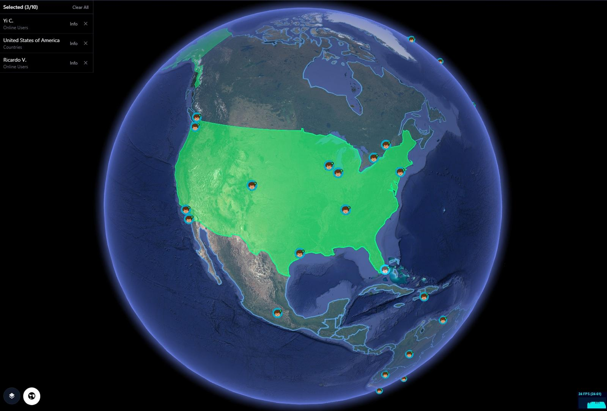
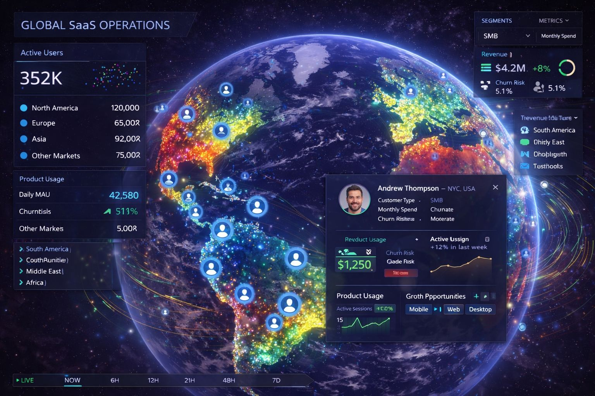
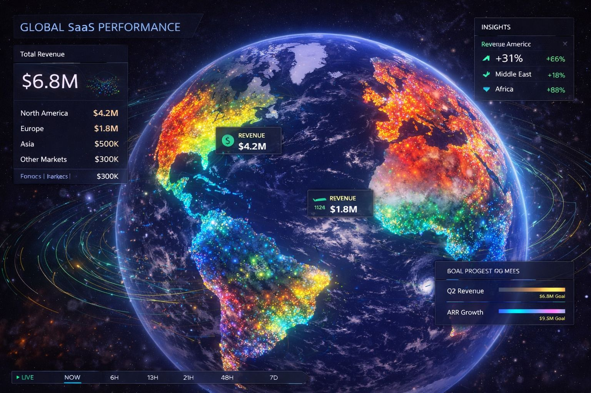
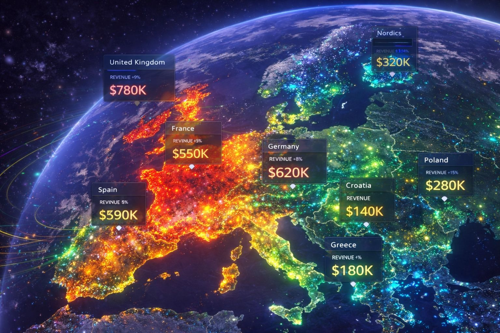

Global Saas Customer Metrics
Track customer growth, engagement, retention, and revenue performance on a 3D globe — to identify what is driving momentum, where friction is building, and how to act faster.
GRIP 3D brings global SaaS customer metrics into a single visual operating layer—customer growth, revenue performance, churn pressure, support demand, product engagement, and regional trends all mapped onto one live globe. Teams can drill from global patterns into countries, cities, cohorts, and business segments to see which layers are impacting revenue and customer experience. It is built for fast-moving product, growth, customer success, and executive teams that need faster clarity, sharper decisions, and a clearer path to remediation.

Global SaaS businesses rely on fragmented dashboards for product usage, customer growth, support demand, and revenue. It takes too long to understand what changed, where it changed, and which business layer is responsible.
- Customer, product, support, and revenue data live in separate tools
- No visual correlation between growth trends and geographic behavior
- Hard to pinpoint which layer is affecting revenue or churn
- Teams react late because insights are scattered across dashboards
GRIP 3D maps customer metrics, engagement, support load, and revenue performance onto one live globe — helping teams drill down by region, segment, and business layer to find root causes faster and take targeted action.
- Global customer and revenue heatmaps with drill-down by region
- Layered visibility across growth, engagement, support, and churn
- Visual detection of patterns impacting top-line revenue
- Faster remediation through one shared operating view
Why this works at enterprise scale
Capabilities
- Customer growth, usage, and retention heatmaps by geography
- Revenue layers by market, cohort, and business segment
- Support demand and product engagement overlays
- Drill-down from global trends to city, cohort, or region
- APIs for partner data ingestion and layer publishing
Platform Views



Open for consulting and partner integrations
If you want this use case mapped to your data sources, we can deliver a fast prototype and integration plan — including layers, APIs, and deployment options.